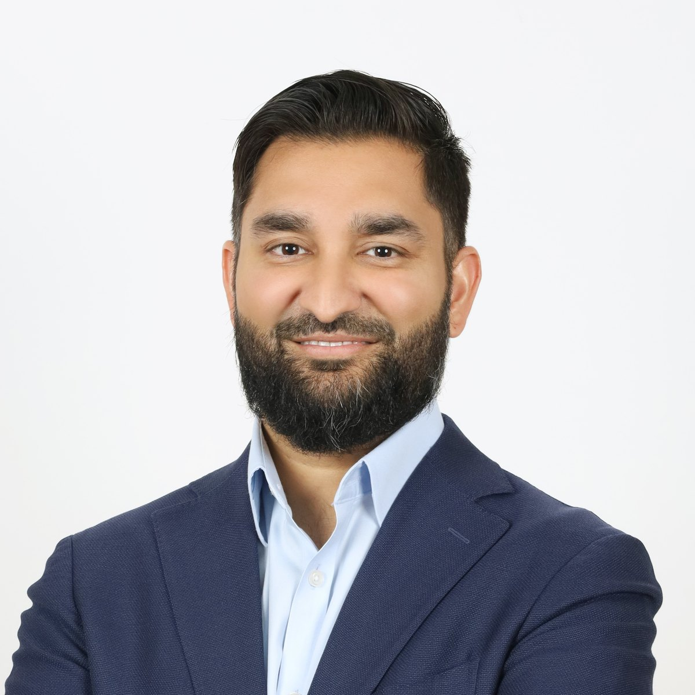

About
Babar Khan, who publishes academically as Babar Khalid Khan, PhD, is an investor, technology executive and entrepreneur. He serves as Head of Technology Investments at NEOM Investment Fund and is a co-founder of AI Astrolabe, an AI data and infrastructure company. Earlier in his career he worked in biotechnology, and he completed his PhD at King Abdullah University of Science and Technology. He was named an Innovator Under 35 by MIT Technology Review in 2019.

Babar KhanBabar deploys sovereign capital across deep tech, biotech and applied AI. He has led more than $150M in transactions through the full cycle, from origination and technical diligence through deal structuring and portfolio management, and has structured cross-border joint ventures to localize frontier technology in the Gulf.
His selected track record, investment focus and the way he works with founders and co-investors are set out on the Perspective page.
Babar co-founded AI Astrolabe, which delivers high-quality multimodal data and low-resource language infrastructure for frontier AI systems and agents. He runs business operations across legal, finance, contracting and fundraising with an AI-first approach, and built the company from zero.
Babar is a scientist by training. He holds a PhD in bioscience from King Abdullah University of Science and Technology, where his doctoral work produced a low-cost sensor system for measuring microbial activity in water purification and desalination systems. He publishes under the name Babar Khalid Khan; his work is indexed on Google Scholar and under ORCID 0000-0001-9887-3843.
He completed his master's degree while working full time as a scientist at Genzyme Genetics. He holds multiple US patents, and at ContraFect Corp, an antimicrobial biotech in New York, he led the preclinical therapeutic pipeline and was the first of three scientists to advance a novel antimicrobial into Phase I clinical trials. The company went on to complete a $20M financing round and an IPO.
In 2019 Babar was named an Innovator Under 35 by MIT Technology Review, on its list for the Middle East and North Africa, recognized for the sensor technology that detects early bacterial accumulation in water desalination plants. The award was presented at EmTech MENA in Dubai.
Babar holds board and governance roles across the portfolio he invests in: Board Member at BlueNalu and at Liberation Bioindustries, and Board Observer at Paradromics. He represents institutional capital at board level while working as an ally to technical founders moving from concept to commercial. The full list sits on the Perspective page.
Babar is an American citizen, a Saudi Premium Resident and a UAE Golden Visa holder, with networks spanning US and China venture, GCC sovereign wealth and global policy circles. He works across Riyadh and New York.
The door is open.